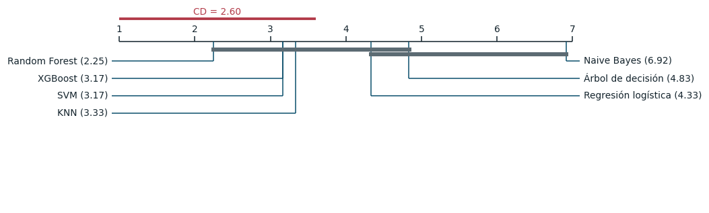

Comparación estadística de los benchmarks#
Con 140 modelos, el número de comparaciones pareadas posibles es 9.730, y aplicarlas sin control produciría cerca de 487 falsos positivos al 5 %. La comparación sigue por eso una secuencia jerárquica: una prueba global, un análisis post-hoc con control del error familiar, comparaciones dirigidas entre finalistas con corrección de Holm y tamaños del efecto.
Clasificación#
Etapa 1: prueba global sobre las 112 combinaciones#
| rango medio | |
|---|---|
| random_forest · ninguno · grid | 18.92 |
| random_forest · ninguno · bayes | 21.67 |
| random_forest · ninguno · genetico | 21.92 |
| random_forest · ninguno · random | 22.33 |
| random_forest · smote · grid | 22.58 |
| random_forest · smote · genetico | 23.58 |
| random_forest · balanced · grid | 24.50 |
| xgboost · smote · genetico | 24.83 |
| random_forest · smote · random | 24.83 |
| random_forest · balanced · random | 26.58 |
| random_forest · balanced · bayes | 26.83 |
| xgboost · smote · random | 28.58 |
| xgboost · balanced · genetico | 29.00 |
| random_forest · balanced · genetico | 29.67 |
| xgboost · balanced · random | 30.00 |
La prueba de Friedman sobre los doce bloques externos rechaza que las 112 combinaciones tengan el mismo rango medio (χ² = 751,5 con 111 grados de libertad, p = 9,4 × 10⁻⁹⁶). La diferencia crítica de Nemenyi con 112 modelos y doce bloques es de 57,7 rangos, y solo 685 de los 6.216 pares la superan. Con doce bloques y 112 modelos, el control del error familiar vuelve indistinguibles casi todas las combinaciones vecinas; la potencia de la prueba se concentra en las diferencias extremas, y la comparación informativa debe hacerse entre finalistas.
Etapa 2: diagrama de diferencia crítica entre los mejores de cada modelo#

Figura 18 Diagrama de diferencia crítica de la mejor combinación de cada modelo (PR-AUC en 12 bloques). Las barras grises unen modelos cuya diferencia de rango medio no supera la CD de Nemenyi.#
| modelo_a | modelo_b | dif_rangos | p_nemenyi | significativo | |
|---|---|---|---|---|---|
| 5 | Random Forest | Naive Bayes | 4.6667 | 0.0000 | True |
| 10 | XGBoost | Naive Bayes | 3.7500 | 0.0004 | True |
| 14 | SVM | Naive Bayes | 3.7500 | 0.0004 | True |
| 17 | KNN | Naive Bayes | 3.5833 | 0.0010 | True |
| 19 | Regresión logística | Naive Bayes | 2.5833 | 0.0528 | False |
| 4 | Random Forest | Árbol de decisión | 2.5833 | 0.0528 | False |
| 20 | Árbol de decisión | Naive Bayes | 2.0833 | 0.2148 | False |
| 3 | Random Forest | Regresión logística | 2.0833 | 0.2148 | False |
| 9 | XGBoost | Árbol de decisión | 1.6667 | 0.4871 | False |
| 13 | SVM | Árbol de decisión | 1.6667 | 0.4871 | False |
| 16 | KNN | Árbol de decisión | 1.5000 | 0.6155 | False |
| 8 | XGBoost | Regresión logística | 1.1667 | 0.8415 | False |
| 12 | SVM | Regresión logística | 1.1667 | 0.8415 | False |
| 2 | Random Forest | KNN | 1.0833 | 0.8833 | False |
| 15 | KNN | Regresión logística | 1.0000 | 0.9178 | False |
| 1 | Random Forest | SVM | 0.9167 | 0.9449 | False |
| 0 | Random Forest | XGBoost | 0.9167 | 0.9449 | False |
| 18 | Regresión logística | Árbol de decisión | 0.5000 | 0.9977 | False |
| 7 | XGBoost | KNN | 0.1667 | 1.0000 | False |
| 11 | SVM | KNN | 0.1667 | 1.0000 | False |
| 6 | XGBoost | SVM | 0.0000 | 1.0000 | False |
Entre las mejores combinaciones de los siete modelos, Friedman rechaza la igualdad (χ² = 36,5, p = 2,2 × 10⁻⁶; la corrección F de Iman y Davenport da 11,3), pero la diferencia crítica de 2,60 rangos solo separa a Naive Bayes de los cuatro mejores modelos. Random Forest, XGBoost, SVM y KNN forman un grupo estadísticamente indistinguible, al que se suman la regresión logística y el árbol en el límite de la significancia. El ordenamiento de los benchmarks es, por tanto, robusto en sus extremos y difuso en el centro.
Comparaciones dirigidas en la prueba reservada: DeLong con Holm#
| Modelo A | Modelo B | Δ AUC | IC 95 % bootstrap por bloques (BCa) | z (DeLong) | p crudo | p ajustado (Holm) | |
|---|---|---|---|---|---|---|---|
| 0 | Random Forest | XGBoost | 0.0009 | [-0.0019; 0.0042] | 1.4743 | 0.1404 | 0.1404 |
| 1 | Random Forest | KNN | 0.0037 | [-0.0009; 0.0113] | 3.5637 | 0.0004 | 0.0011 |
| 2 | XGBoost | KNN | 0.0028 | [-0.0030; 0.0101] | 2.4796 | 0.0132 | 0.0263 |
La prueba de DeLong sobre la prueba reservada no distingue a Random Forest de XGBoost (p ajustado de 0,14), pero sí declara significativas sus ventajas sobre KNN, y la de XGBoost sobre KNN, tras la corrección de Holm. El intervalo de confianza por bootstrap estacionario de la misma diferencia de AUC, en cambio, contiene el cero en los tres casos. La discrepancia se debe a que DeLong estima la varianza del AUC suponiendo que los días de prueba son independientes; con una autocorrelación de 0,99 la muestra efectiva es mucho menor que los 5.946 días, y sus p-valores resultan optimistas. Por esa razón DeLong se reporta solo como prueba complementaria, y las conclusiones se apoyan en el bootstrap por bloques (con longitud media de 133 días) y en las pruebas sobre bloques externos.
Intervalos de confianza y tamaños del efecto#
| Modelo | Métrica | Estimación | IC 95 % inferior | IC 95 % superior | |
|---|---|---|---|---|---|
| 0 | Random Forest | PR-AUC | 0.9495 | 0.9110 | 0.9713 |
| 1 | Random Forest | ROC-AUC | 0.9806 | 0.9711 | 0.9874 |
| 2 | XGBoost | PR-AUC | 0.9411 | 0.8807 | 0.9647 |
| 3 | XGBoost | ROC-AUC | 0.9797 | 0.9703 | 0.9871 |
| 4 | KNN | PR-AUC | 0.9377 | 0.8879 | 0.9679 |
| 5 | KNN | ROC-AUC | 0.9769 | 0.9623 | 0.9864 |
| 6 | SVM | PR-AUC | 0.9496 | 0.9081 | 0.9755 |
| 7 | SVM | ROC-AUC | 0.9801 | 0.9689 | 0.9891 |
| 8 | Árbol de decisión | PR-AUC | 0.8959 | 0.8235 | 0.9342 |
| 9 | Árbol de decisión | ROC-AUC | 0.9604 | 0.9419 | 0.9751 |
| 10 | Regresión logística | PR-AUC | 0.8910 | 0.7912 | 0.9465 |
| 11 | Regresión logística | ROC-AUC | 0.9665 | 0.9439 | 0.9825 |
| 12 | Naive Bayes | PR-AUC | 0.7553 | 0.6238 | 0.8580 |
| 13 | Naive Bayes | ROC-AUC | 0.9118 | 0.8682 | 0.9442 |
| modelo | dif_media | victorias | p | p_holm | delta_cliff | magnitud | |
|---|---|---|---|---|---|---|---|
| 5 | Naive Bayes | 0.2046 | 12 | 0.0002 | 0.0015 | 0.7917 | grande |
| 3 | Árbol de decisión | 0.0443 | 11 | 0.0005 | 0.0024 | 0.3194 | pequeño |
| 4 | Regresión logística | 0.0599 | 10 | 0.0061 | 0.0244 | 0.2778 | pequeño |
| 1 | KNN | 0.0220 | 8 | 0.0881 | 0.2644 | 0.1250 | despreciable |
| 0 | XGBoost | 0.0054 | 9 | 0.1167 | 0.2644 | 0.1111 | despreciable |
| 2 | SVM | 0.0241 | 7 | 0.1506 | 0.2644 | 0.0694 | despreciable |
Los intervalos de la PR-AUC en la prueba se solapan ampliamente entre los cuatro mejores modelos. La comparación de Random Forest con cada benchmark mediante Wilcoxon con Holm sobre los doce bloques confirma la estructura del diagrama de diferencia crítica: la ventaja es significativa y de tamaño no despreciable frente a Naive Bayes (δ de Cliff grande), el árbol de decisión y la regresión logística (pequeño), y no lo es frente a KNN, XGBoost ni SVM, con tamaños del efecto despreciables. Entre los mejores benchmarks, por tanto, las diferencias observadas son menores que la variabilidad entre bloques, y elegir a Random Forest como referencia para el modelo original es una decisión por media, no una superioridad demostrada.
Regresión: secuencia jerárquica#
Model Confidence Set#
| Combinación | RMSE (m³/s) | Rango medio de pérdida | p-valor MCS | ¿En el conjunto? | |
|---|---|---|---|---|---|
| 0 | svr|bayes | 580.3 | 12.43 | 1.000 | Sí |
| 1 | svr|random | 584.0 | 12.58 | 0.604 | Sí |
| 2 | xgboost|random | 588.2 | 12.94 | 0.604 | Sí |
| 3 | xgboost|genetico | 590.4 | 13.05 | 0.604 | Sí |
| 4 | svr|genetico | 592.2 | 13.08 | 0.584 | Sí |
| 5 | svr|grid | 592.3 | 13.01 | 0.005 | No |
| 6 | xgboost|bayes | 604.9 | 13.75 | 0.044 | No |
| 7 | random_forest|random | 618.9 | 13.93 | 0.018 | No |
| 8 | random_forest|genetico | 622.1 | 13.89 | 0.018 | No |
| 9 | xgboost|grid | 626.1 | 14.40 | 0.000 | No |
| 10 | random_forest|bayes | 628.2 | 14.30 | 0.004 | No |
| 11 | ridge|grid | 628.9 | 14.49 | 0.000 | No |
| 12 | ridge|bayes | 628.9 | 14.55 | 0.000 | No |
| 13 | ridge|genetico | 629.0 | 14.58 | 0.000 | No |
| 14 | ridge|random | 629.3 | 14.59 | 0.000 | No |
| 15 | random_forest|grid | 630.0 | 14.23 | 0.004 | No |
| 16 | lasso|random | 631.5 | 14.67 | 0.000 | No |
| 17 | lasso|grid | 633.5 | 14.74 | 0.000 | No |
| 18 | lasso|genetico | 633.9 | 14.77 | 0.000 | No |
| 19 | lasso|bayes | 634.3 | 14.75 | 0.000 | No |
| 20 | knn|grid | 685.0 | 15.39 | 0.000 | No |
| 21 | knn|bayes | 685.3 | 15.42 | 0.000 | No |
| 22 | knn|random | 686.6 | 15.50 | 0.000 | No |
| 23 | knn|genetico | 686.6 | 15.50 | 0.000 | No |
| 24 | arbol|random | 738.1 | 16.17 | 0.000 | No |
| 25 | arbol|bayes | 750.4 | 16.30 | 0.000 | No |
| 26 | arbol|genetico | 758.9 | 16.55 | 0.000 | No |
| 27 | arbol|grid | 775.8 | 16.45 | 0.000 | No |
El Model Confidence Set [Hansen et al., 2011] parte de las 28 combinaciones y, con un bootstrap estacionario sobre la pérdida cuadrática diaria de las predicciones fuera de muestra (1986-2009), elimina iterativamente la peor mientras la hipótesis de igual capacidad predictiva se rechace. Con α = 0,10, el conjunto de confianza retiene 5 combinaciones.
Comparaciones dirigidas: Giacomini-White, Clark-West y Diebold-Mariano#
| modelo A | modelo B | DM-HLN | p DM | GW | p GW | Δ pérdida media (10⁶ m⁶/s²) | IC 95 % bootstrap estacionario | d de Cohen | p DM (Holm) | p GW (Holm) | |
|---|---|---|---|---|---|---|---|---|---|---|---|
| 0 | svr|bayes | svr|random | -1.4750 | 0.1403 | 3.9196 | 0.1409 | -0.0043 | [-0.012; 0.002] | -0.0503 | 0.4208 | 0.4227 |
| 1 | svr|bayes | xgboost|random | -0.8108 | 0.4175 | 1.0844 | 0.5815 | -0.0092 | [-0.030; 0.014] | -0.0240 | 0.5926 | 0.8826 |
| 2 | svr|bayes | xgboost|genetico | -1.0445 | 0.2963 | 1.6361 | 0.4413 | -0.0119 | [-0.033; 0.011] | -0.0308 | 0.5926 | 0.8826 |
| 3 | svr|bayes | svr|genetico | -1.8323 | 0.0669 | 6.4587 | 0.0396 | -0.0140 | [-0.037; 0.006] | -0.0782 | 0.2678 | 0.1583 |
| modelo general | modelo restringido | CW | p CW | RMSE general | RMSE persistencia | p CW (Holm) | |
|---|---|---|---|---|---|---|---|
| 0 | svr|bayes | persistencia | 10.8453 | 0.0 | 580.2886 | 1021.9871 | 0.0 |
| 1 | svr|random | persistencia | 10.8021 | 0.0 | 583.9562 | 1021.9871 | 0.0 |
| 2 | xgboost|random | persistencia | 10.7256 | 0.0 | 588.1657 | 1021.9871 | 0.0 |
| 3 | xgboost|genetico | persistencia | 10.7185 | 0.0 | 590.4435 | 1021.9871 | 0.0 |
| 4 | svr|genetico | persistencia | 10.7826 | 0.0 | 592.2084 | 1021.9871 | 0.0 |
| SPA frente a Ridge | |
|---|---|
| lower | 0.0005 |
| consistent | 0.0005 |
| upper | 0.0900 |
| bloque | 61.0000 |
La secuencia de regresión confirma lo que sugerían las métricas. El conjunto de confianza retiene las combinaciones de SVR y XGBoost con optimización bayesiana, aleatoria y genética, y excluye a Random Forest, a los modelos lineales, a KNN y a los árboles, cuyas pérdidas son significativamente mayores. Entre los finalistas, ni Diebold-Mariano con la corrección de Harvey, Leybourne y Newbold [Harvey et al., 1997] ni Giacomini-White [Giacomini and White, 2006] encuentran diferencias significativas tras Holm, y los intervalos del bootstrap estacionario de la diferencia de pérdida contienen el cero: SVR y XGBoost son estadísticamente equivalentes para predecir el caudal a quince días, con tamaños de efecto despreciables (|d| < 0,08). La prueba de Clark-West, aplicada al único anidamiento natural del problema, el de la persistencia (\(\hat Q_{t+15} = Q_t\)) dentro de los modelos que usan el caudal actual, rechaza con claridad que los finalistas no mejoren sobre ella [Clark and West, 2007]. Finalmente, la prueba SPA de Hansen [Hansen, 2005] con Ridge como benchmark da un p-valor consistente de 0,0005: hay al menos un modelo que supera de forma genuina a la regresión lineal regularizada, y esa conclusión no es producto de haber probado muchos modelos.